Sales Commission - Plans, Tiers, Settlements, Vendor Bills
Sales commission and salesperson commission from invoices: percentage, tiered or per-unit rules, refunds deducted, approval, settlements with vendor bills.
- Price
- $39
- Odoo versions
- 16.0
- 17.0
- 18.0
- 19.0
- 20.0
- Technical name
tamadoo_sales_commission- License
- OPL-1

Video
Screen recording in Odoo 20.0 with demo data, no sound. Also on YouTube.
Text and screenshots below are from the Odoo 20.0 version of this module.
Commission for every salesperson straight from your customer invoices: plans per salesperson or sales team, percentage, tiered or per-unit rates by product and category, credit notes deducted, manager approval and period settlements with vendor bills and a PDF statement.
Commission without spreadsheets

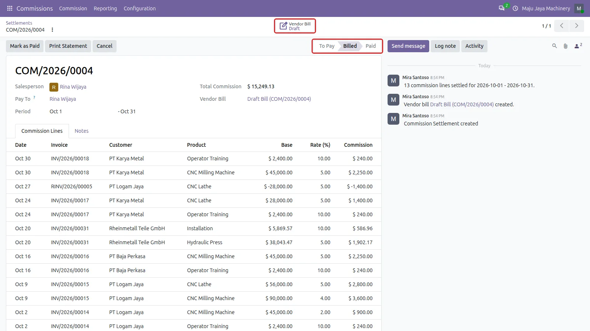
What you get
Plans per salesperson or team
Give a salesperson their own plan, or one plan to a whole sales team; the salesperson's own plan wins.
Rules by product or category
A rule for one product, a category (sub-categories included) or everything; the most specific rule applies to each invoice line.
Three rate types
A fixed percentage, tiers on the amount achieved in the month, quarter or year (each rate on its slice), or a fixed amount per unit.
Invoiced or paid
Per plan: commission is earned when the customer invoice is posted, or only once it is fully paid.
Credit notes deducted
Credit notes, cancelled or reset invoices and removed payments take the commission back automatically; nothing approved is ever rewritten.
Multi-currency
Invoices in a foreign currency count at the invoice's own rate, in company currency.
Manager approval
Commission lines wait for a sales manager; approved lines are locked.
Settlements and vendor bills
One click settles a period: one settlement per salesperson, with a vendor bill or a payout record only. Paying the bill marks the commission paid.
PDF statement
A commission statement per settlement: every invoice line, base, rate, deductions and total.
Analysis
Pivot and graph per salesperson, team, category and month.
Private by design
Salespeople see only their own commission and settlements; sales managers see and manage everything.
Step by step
A plan for Rina
Services pay 10%, machines are tiered, everything else 1.5%; tiers reset every month.
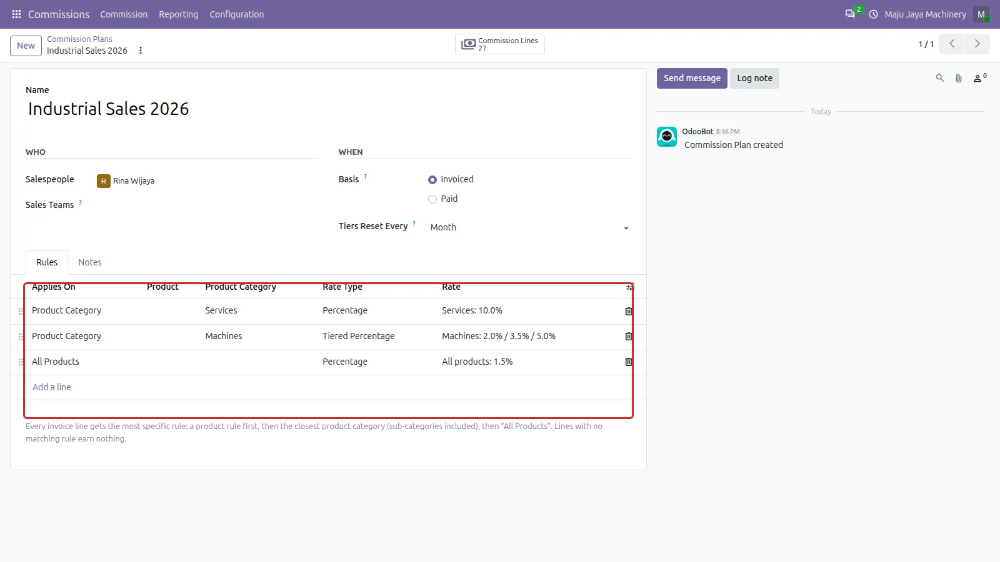
Tiered rates
2% up to 50,000 achieved in the month, 3.5% from 50,000, 5% from 100,000 - each rate on its own slice.
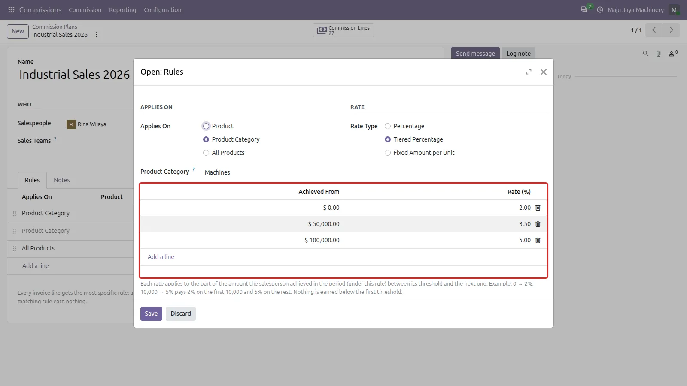
A team plan, paid basis
Everyone in Project Sales earns 900 per CNC milling machine and 3% on the rest, once the customer has paid.
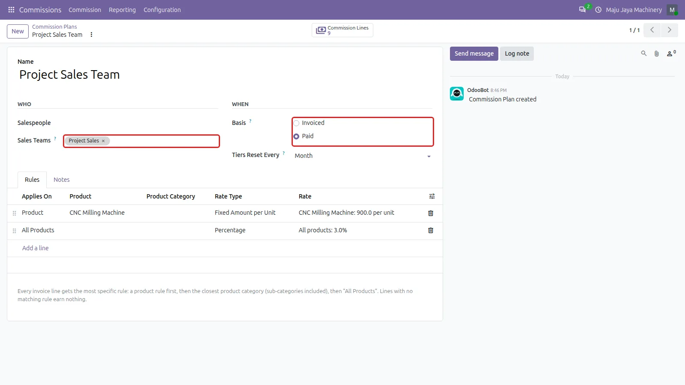
From the invoice
A posted invoice in EUR shows its commission in a smart button.
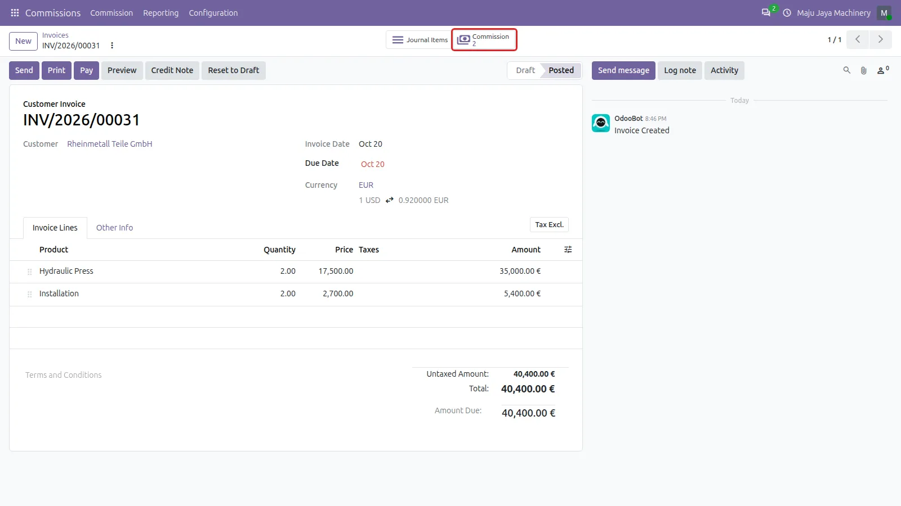
Counted in company currency
The EUR amounts are converted at the invoice's own rate before the rates apply.
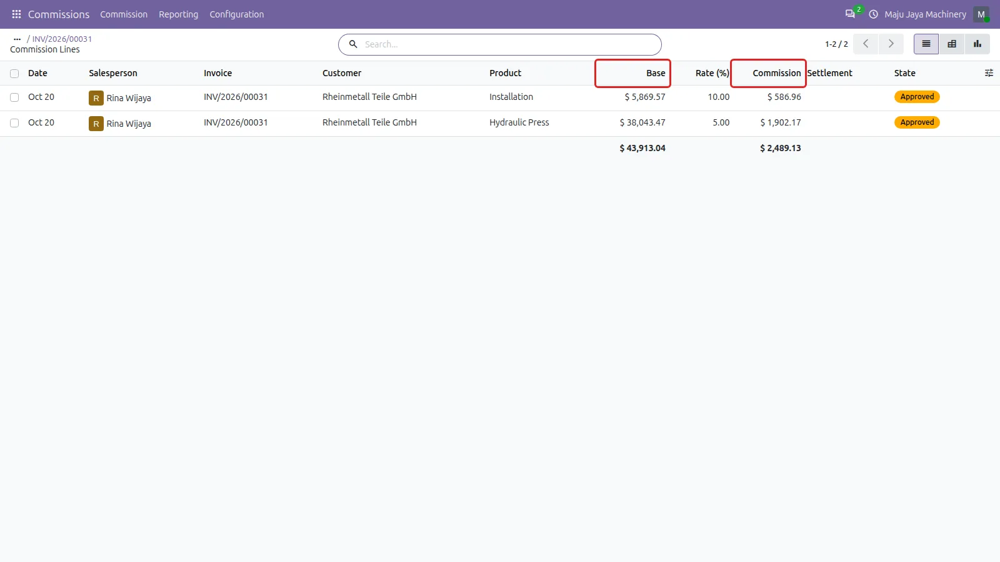
Approve
A sales manager approves the month's commission in one go.
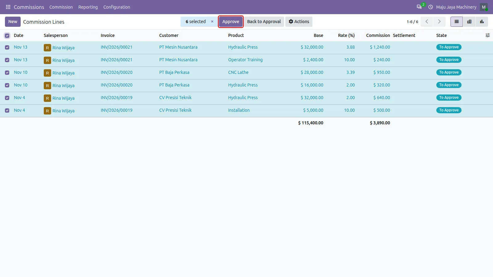
Credit notes take it back
A returned lathe: the credit note creates a negative commission line.
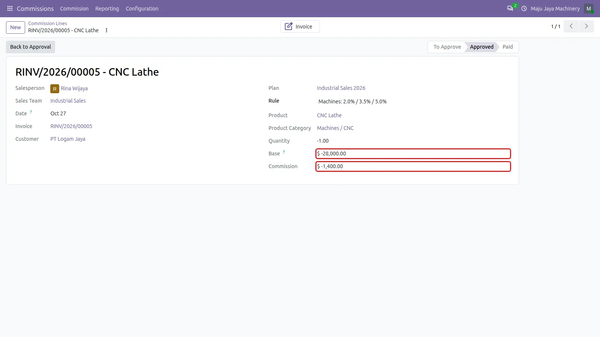
Settle a period
Settle Commission groups the approved commission per salesperson; lines still waiting for approval are flagged.
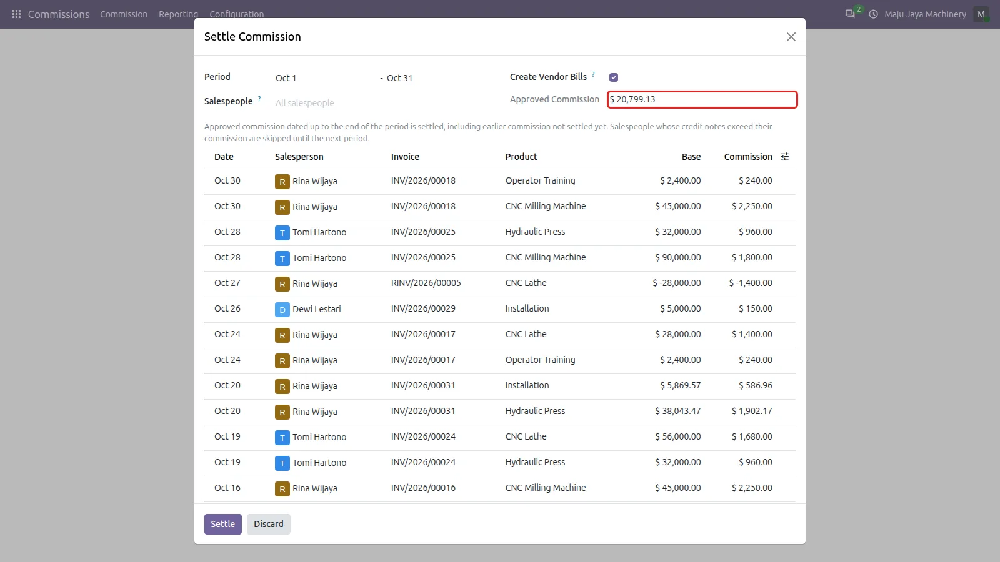
One settlement per salesperson
Each with its vendor bill, ready for accounting.
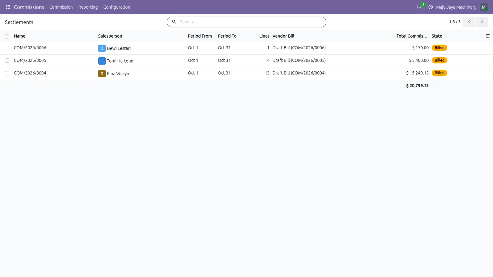
The settlement
Period, lines, total and the vendor bill; paying the bill marks it paid.

The vendor bill
Made out to the salesperson, on the commission expense account.
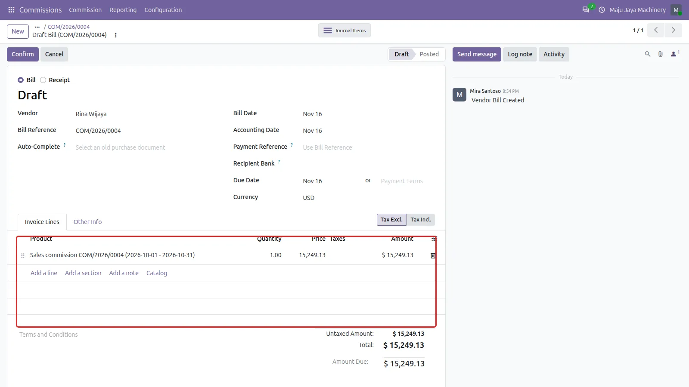
Commission statement
The PDF statement for the salesperson: lines, deductions and total.
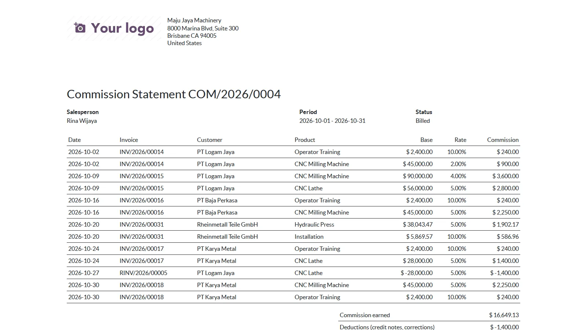
Commission analysis
Commission per salesperson and month.
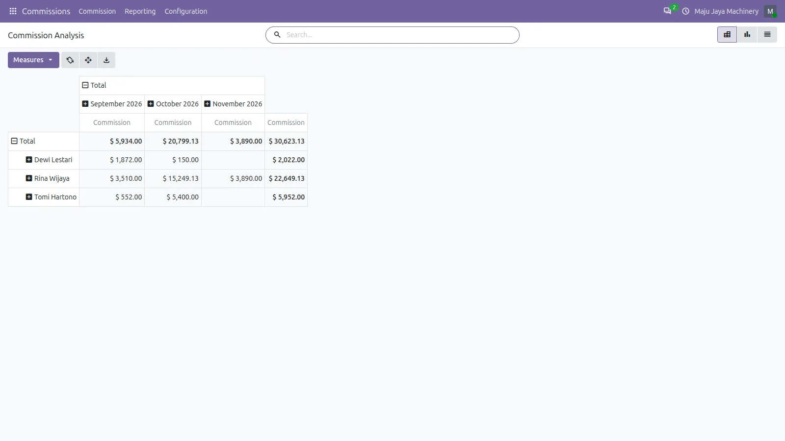
Graph
Monthly commission stacked per salesperson.
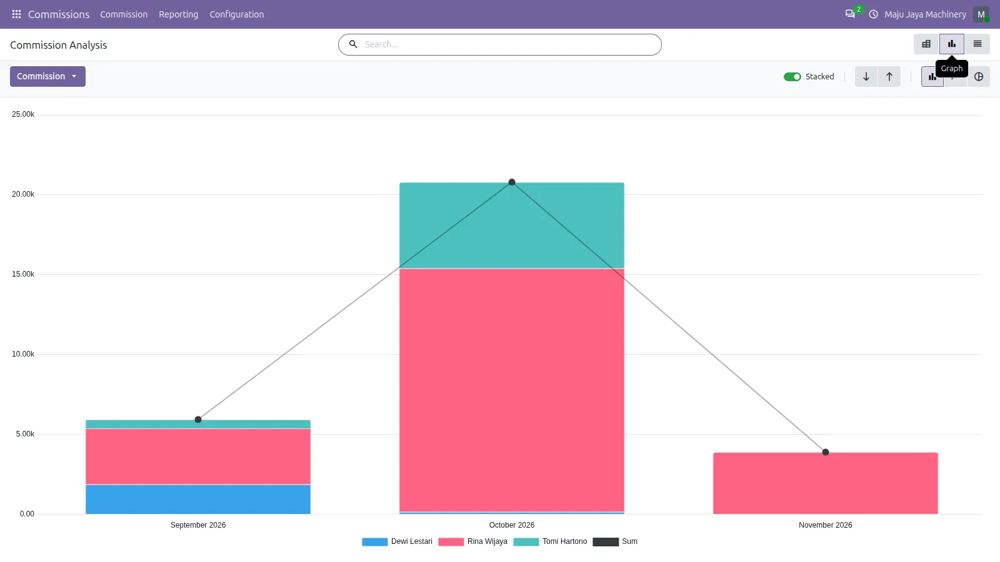
Settings
Expense account and purchase journal of the commission bills.
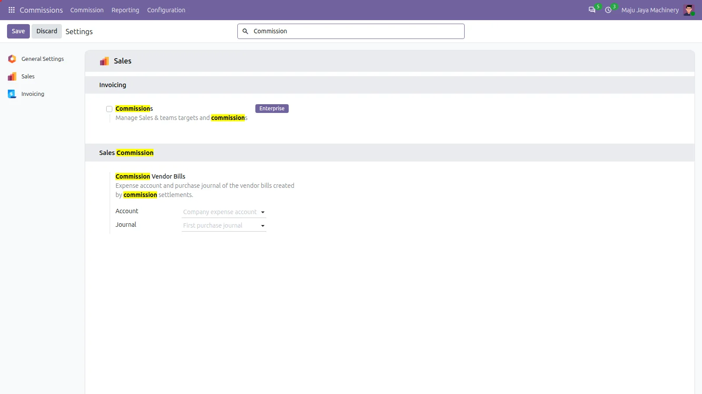
What Tomi sees
Only his own commission...
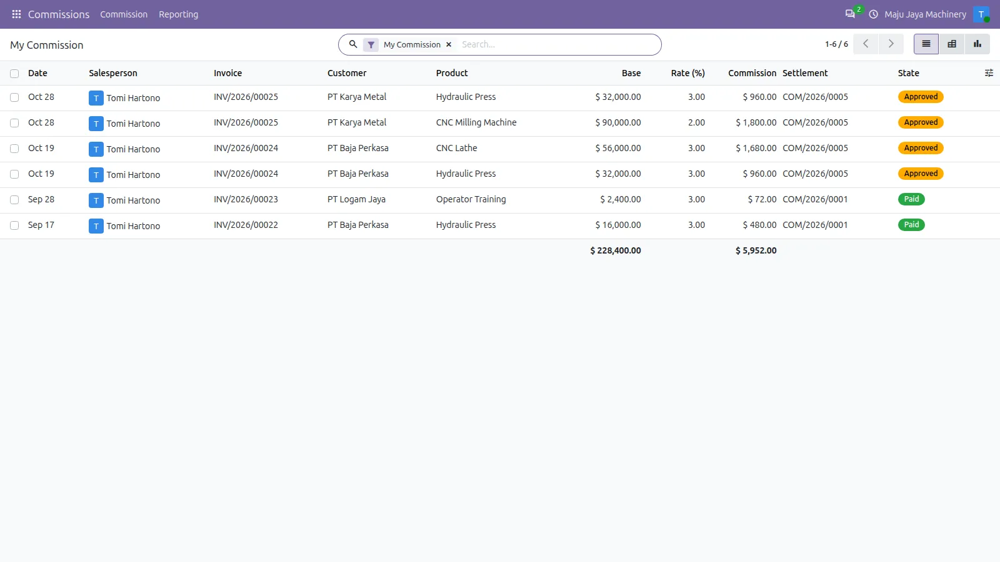
His settlements
...and only his own settlements and statements.
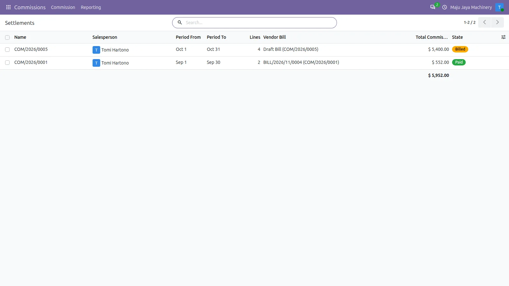
Set up in 5 minutes
- Install the module (depends on sale_management, the Sales app).
- Optional: Sales → Configuration → Settings → Sales Commission: expense account and journal of the commission bills.
- Commissions → Configuration → Commission Plans: create a plan, pick the salespeople or sales teams, invoiced or paid, and the rules.
- Post customer invoices as usual: commission lines appear by themselves. Invoices posted earlier: select them and run Actions → Compute Commission.
- Sales managers approve lines in Commissions → Commission → Commission Lines.
- At period end run Commissions → Commission → Settle Commission; post and pay the vendor bills (or mark payout records paid).
Get Sales Commission
Questions before buying? Write to tama.odoo@gmail.com.